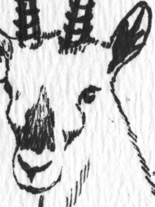

As a note to my fan(s), I’m going to break the triforce and try to maintain my off-the-wall and primarily socially-oriented, web-enabled posting at Seven Lions while donning the Digital Humanities Guy outfit and posting on the more academic stuff over at HASTAC, where I’m a HASTAC Scholar (The pay isn’t so great, but you get low-level membership into the Illuminati, so it’s a career builder). So if you want to read my critique of current Digital Humanities projects, you’ll have to look here. If you want to enjoy the occasional reference to whacky singers, game-inspired art and Bughunter, keep your Seven Lions bookmark.

Remember, Gazey the pen-and-ink gazelle is always watching you at Seven Lions.
This entry was posted on Tuesday, October 6th, 2009 at 11:22 PM and is filed under Uncategorized. You can follow any responses to this entry through the RSS 2.0 feed. Both comments and pings are currently closed.